Free PDF
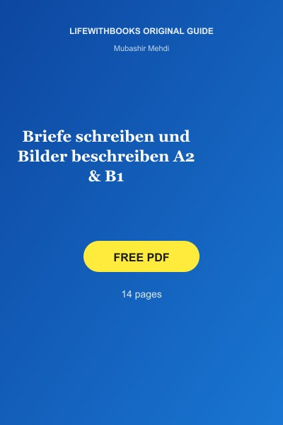
Briefe schreiben und Bilder beschreiben A2 & B1
Original LifeWithBooks guide — Targeted practice for two key German exam writing tasks: letter writi
Download FreeLearn German with free German learning books on LifeWithBooks — Goethe-Zertifikat preparation, Deutsch Intensiv Wortschatz vocabulary guides, grammar references and conversation practice for every level from A1 to C2.
Popular resources include Deutsch Intensiv Wortschatz C1, Goethe B1 vocabulary, grammar lists and letter-writing practice — all browsable free on LifeWithBooks.

Original LifeWithBooks guide — Targeted practice for two key German exam writing tasks: letter writi
Download Free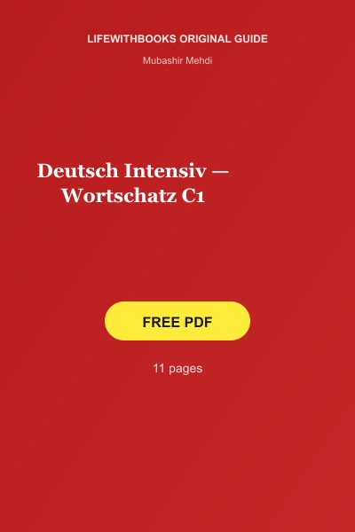
Original LifeWithBooks guide — Intensive vocabulary training for advanced German learners at C1 leve
Download Free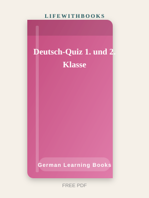
Original LifeWithBooks guide — A colourful quiz book introducing primary school children to basic Ge
Download Free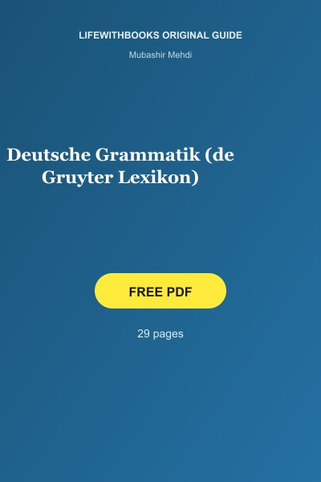
Original LifeWithBooks guide — A thorough, linguistically precise reference grammar of German from t
Download Free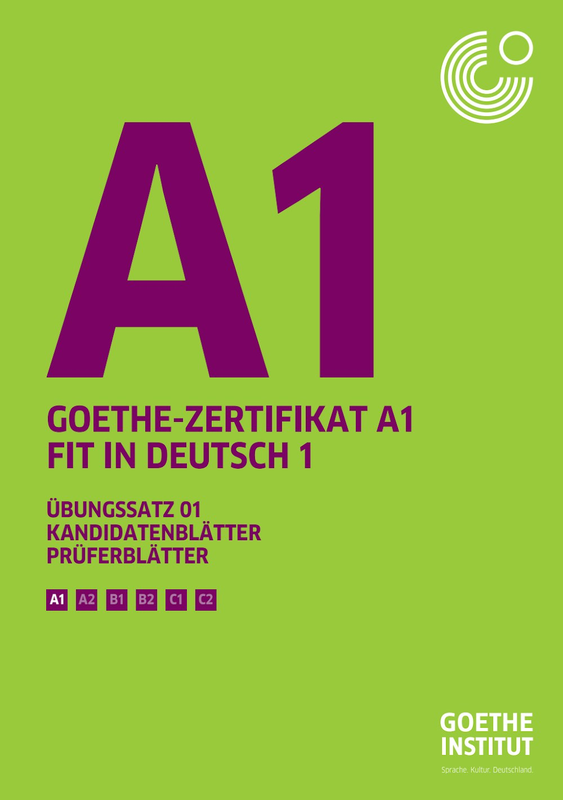
Original LifeWithBooks guide — Complete practice exam for the A1 Fit in Deutsch 1 youth exam, with c
Download FreeOriginal LifeWithBooks guide — Official handbook detailing the goals, structure and assessment of th
Download FreeOriginal LifeWithBooks guide — Standard preparation book for the A2 Fit in Deutsch 2 exam, suitable
Download FreeOriginal LifeWithBooks guide — Teen-friendly preparation material for the A2 Fit in Deutsch 2 exam,
Download Free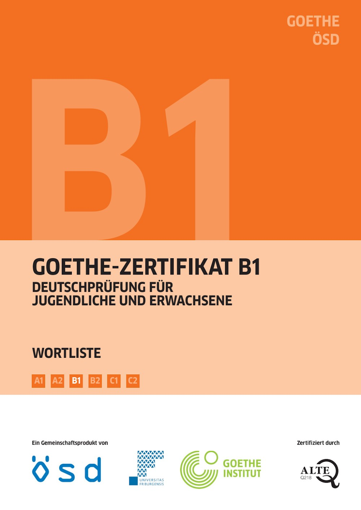
Original LifeWithBooks guide — Official preparation material for the modular B1 German exam, coverin
Download Free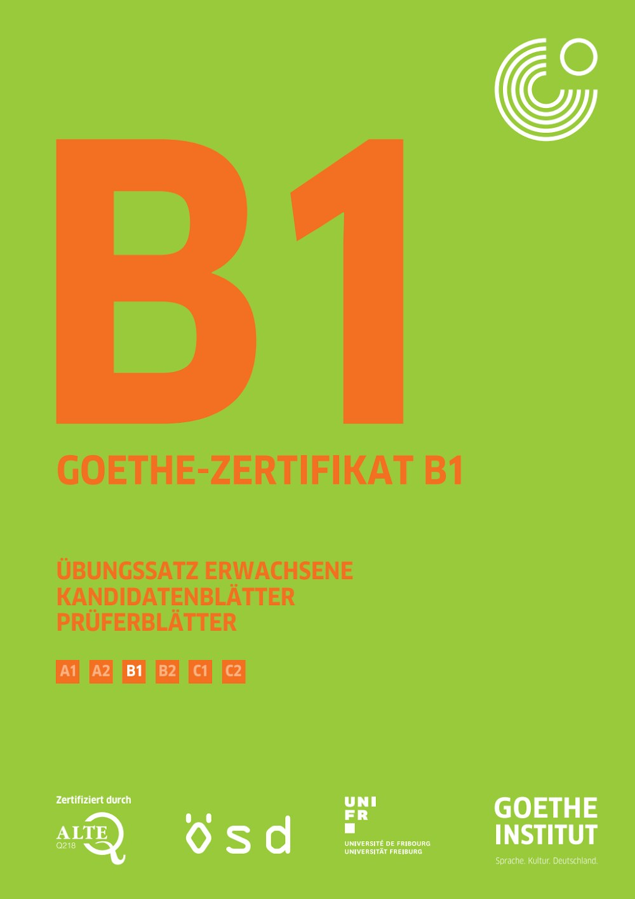
Original LifeWithBooks guide — The adult-focused official practice set for the B1 German exam with c
Download Free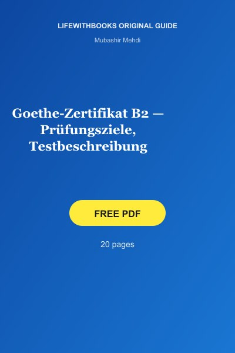
Original LifeWithBooks guide — The official handbook describing the goals, structure, task types and
Download FreeOriginal LifeWithBooks guide — The third official practice set for the Goethe-Zertifikat B2, providi
Download FreeOriginal LifeWithBooks guide — Official practice set for the Goethe-Zertifikat C1 advanced German ex
Download FreeOriginal LifeWithBooks guide — The official model exam for the highest Goethe-Institut certificate,
Download Free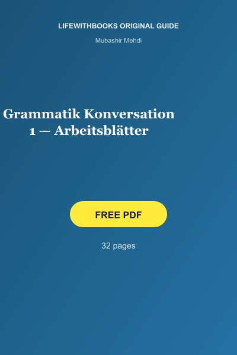
Original LifeWithBooks guide — Photocopiable worksheets that combine German grammar practice with co
Download Free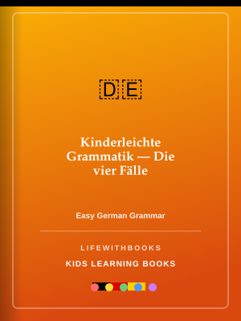
Original LifeWithBooks guide — A child-friendly and visual explanation of the four German grammatica
Download Free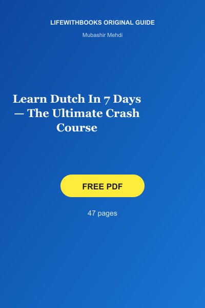
Original LifeWithBooks guide — A seven-day crash course covering the essentials of Dutch — pronuncia
Download FreeOriginal LifeWithBooks guide — A two-day crash course in essential German covering pronunciation, ke
Download Free
Original LifeWithBooks guide — Essential travel phrases in French, Italian and German from popular t
Download FreeOriginal LifeWithBooks guide — A structured workbook that takes German learners step by step from B1
Download Free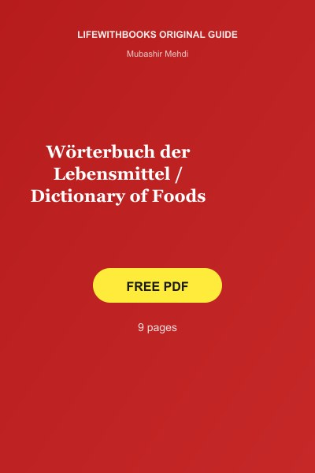
Original LifeWithBooks guide — A comprehensive bilingual German–English dictionary covering food ter
Download Free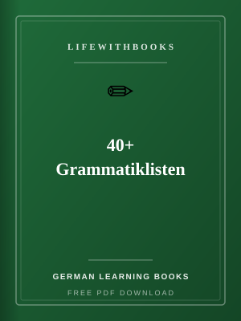
Over 40 quick-reference grammar lists summarising essential German rules — verb conjugations, prepos
Read More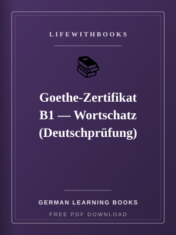
Official themed vocabulary lists for the B1 German exam, with the key words and expressions candidat
Read More